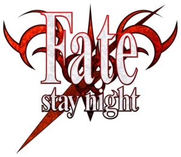
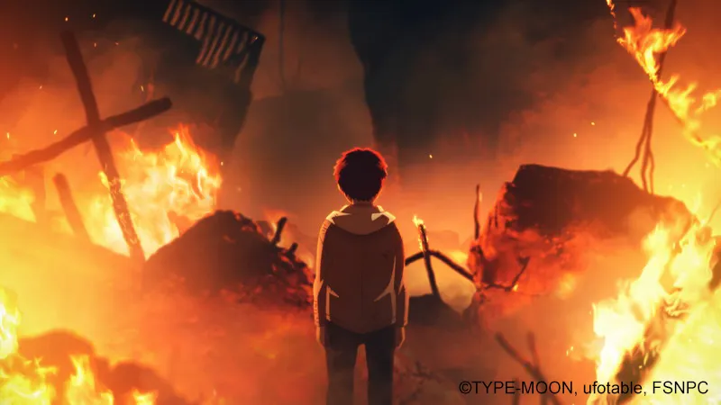
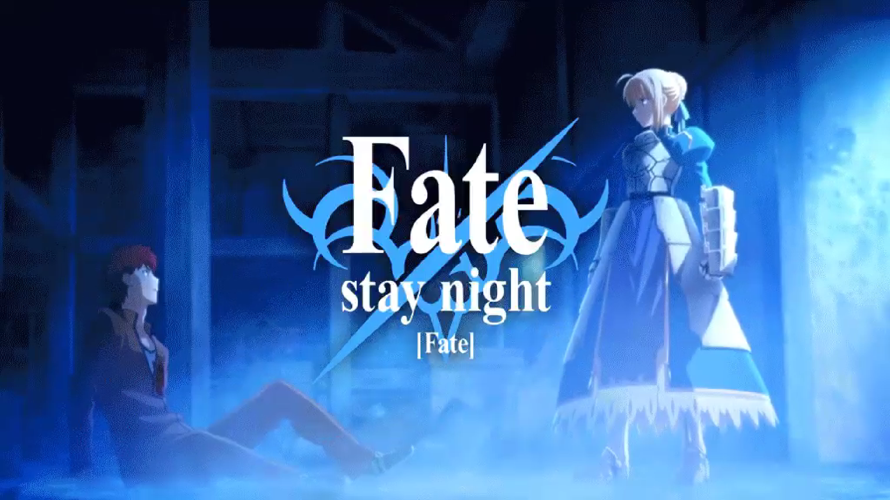
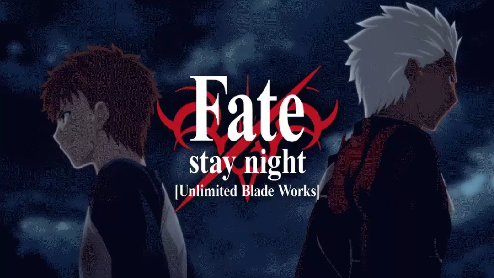
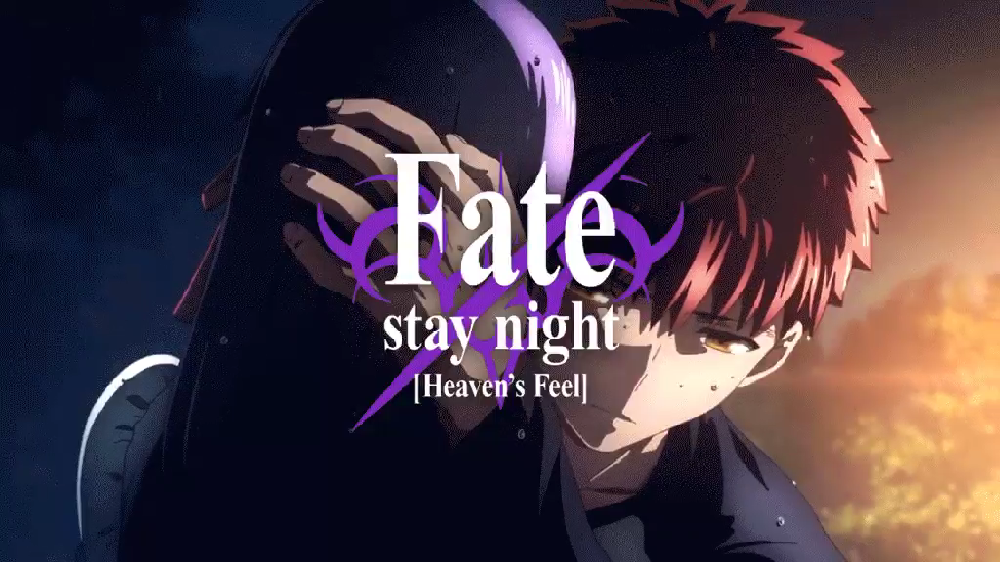

Fate/stay night (フェイト／ステイナイト, Feito/sutei naito) is a Japanese eroge visual novel game created by TYPE-MOON, which was originally released on January, 30, 2004.
It is TYPE-MOON's first commercial work, following its transition from a doujin soft visual novel group.
Set in the same universe as previous TYPE-MOON releases, it is among the most well-known and popular visual novels.
Learn More
Fate/stay night chronicles a two-week period in the life of Shirou Emiya, an amateur mechanic who attends a school called Homurahara Gakuen in Fuyuki City.
Ten years ago, Shirou was caught in a massive fire that incinerated his parents and consumed a large portion of the city. As he was dying, an enigmatic man named Kiritsugu Emiya discovered, saved, and adopted him. The two maintain a distant relationship because of Kiritsugu's frequent departures from Fuyuki City.
. . . . . .


After completing the Holy Grail War, completing the promise with Shirou, and destroying the Holy Grail, Saber can finally let go of his Servant status and say "I love you" to Shirou with a smile.
The liberated king returned to his own time, returned the sword of the elf, and rested peacefully under the tree with the pride of the king, which was the basis for the ending of the Fate line TV animation produced by Studio Deen in 2006 .

The encounter with Shirou and Archer made Saber firm in his beliefs. With feelings for Shirou, Saber went on the same route as Fate and continued her journey. Archer left under the rising sun, entrusting his past self to Rin. After Shirou and Rin went through a brutal war, Shirou followed Rin to learn magic and made a promise to stay together for a lifetime. In this ending, it was revealed that Rin was about to go to the Tower of London for further studies after graduation, and invited Shirou to go to London with him.
More
Ilyasviel kept Shirou's soul at the cost of her life, and Rin resurrected Shirou with the help of a doll. Afterwards, Sakura, who possesses the Holy Grail function and possesses near-infinite magic power, maintains Shirou's vitality by supplementing the magic power.
After returning from London, Rin seems to have joined in.
In the 39th round of Tiger Dojo, this line is the true ending of the game. (Nasu Mushroom later denied this line as the true ending.
2020.10.02